应用平台¶
应用平台是应用运维的主要工作平台，包括应用的管理，应用交付、制品仓库的管理等，是以应用为中心的管理平台。 应用平台概览页，显示全平台管理的业务数量，应用数量，服务数量，流水线个数和制品仓库数量；以条形图的形式展示最近两周的流水线构建记录，可对比成功与失败，分析流水线的稳定性；活跃应用排行列举出五条每个应用内最新构建记录，体现最近活跃的前五个应用。

应用设置¶
应用管理可对业务和应用进行管理，业务管理内有业务列表可对其可搜索，查看，新增，删除和修改。
应用管理内有应用列表，可搜索，查看，新增，删除和修改，且可以进入应用对当前应用进行流水线制品库等管理操作。
业务管理¶
业务管理栏可查看全平台所管理的业务，可按照业务名称，唯一标识进行搜索定位，也可进行刷新列表新建业务，编辑业务，删除业务等操作。
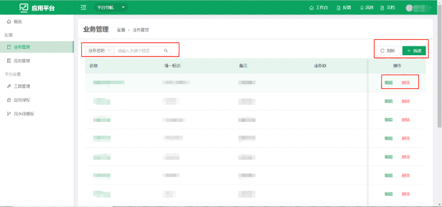
- 当要使用应用平台的时候，首先需要创建业务，点击新建按钮会弹出新建框，输入相关字段信息便可新建成功。
- 名称和唯一标识是必填项，其他字段包括关联关系字段可以在资源平台进行管理，详见资源平台（2.3.1. 资源模型 业务模型 业务），包括新建基本属性字段，选择字段类型，关联属性字段选，择关联模型等操作。资源平台支持近十种字段类型。
注意：唯一标识仅支持字母数字下划线，且以字母开头，不可与其他业务唯一标识重名。


- 点击编辑按钮跳出业务编辑框，可对相关字段进行修改。
注意：唯一标识一旦新建便不可被修改。

- 点击删除按钮将删除当前业务，请谨慎操作。
注意：当业务下有关联的应用时是不可以被删除的

- 点击业务名称可进入业务详情页面，可查看业务字段信息，操作关联关系。
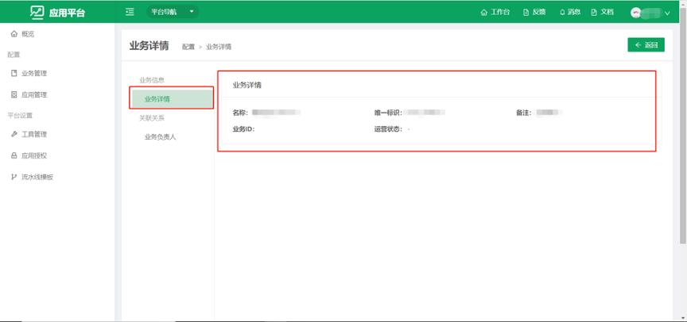
点击关联关系下选项可查看当前业务关联的模型列表，可进行搜索数据，添加数据，批量移除数据，刷新数据等操作。

- 点击添加关系，可获取到相关模型的数据列表，点击绑定，会添加上关联关系，可以搜索关联关系列表。

应用管理¶
应用管理栏可查看全平台所管理的应用，可按照应用名称，唯一标识进行搜索定位，也可进行刷新列表新建应用，编辑应用，删除业应用等操作。

- 点击新建按钮会弹出新建框，输入相关字段信息便可新建成功。
- 名称和唯一标识和所属业务是必填项，其他字段包括关联关系字段可以在资源平台进行管理，详见资源平台（2.3.1. 资源模型 业务模型 应用），包括新建基本属性字段，选择字段类型，关联属性字段选择关联模型等操作。资源平台支持近十种字段类型。 注意：唯一标识仅支持字母数字下划线，且以字母开头，不可与其他应用唯一标识重名。
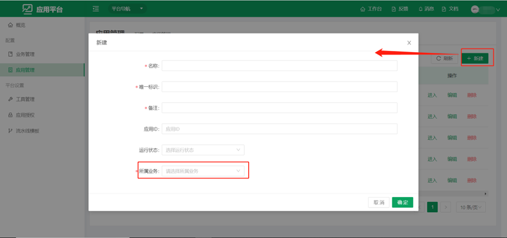

- 点击编辑按钮跳出应用编辑框，可对相关字段进行修改，可以修改所属业务。 注意：唯一标识一旦新建便不可被修改。

- 点击删除按钮将删除当前应用，请谨慎操作。 注意：当业务下有关联的服务或应用内其他资源时是不可以被删除的。

- 点击应用名称或点击进入按钮将进入当前应用，对其进行管理和操作。

平台设置¶
工具管理¶
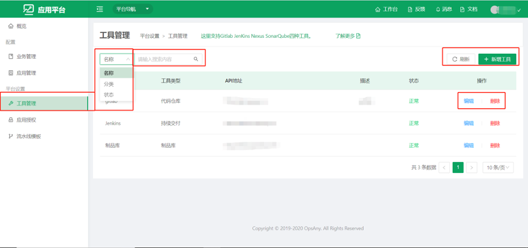
- 应用平台有工具管理菜单，可以添加Gitlab，Jenkins，Nexus等工具， 进入应用内，配合流水线制品库等功能对应用进行管理操作。
- 当前工具管理界面可以对工具进行搜索，刷新，新建，编辑，删除等操作。
- 状态一列显示当前工具的连接状态，当状态为不正常时，该工具不可用，请修改地址用户名密码或查看当前服务调至正常状态。
- 点击刷新可刷新当前工具列表状态。
注意：谨慎修改API地址和删除工具，当流水线与制品库有数据时修改API地址或删除此工具，可能会损失当前现有的流水线或制品库数据。

点击新建工具按钮弹出新建工具窗口，按照字段提示输入相关信息，点击确定后测试连接状态，当连接不正常时不可创建。
注意：每一个工具仅支持配置一个地址。

点击编辑按钮可编辑当前工具，当状态连接不正常时可修改用户名或密码等。
应用授权¶
应用授权可对应用进行授权，将执行人员分配至指定的应用内，非管理员只有授权了应用在应用列表才可以看到，并且可以进入应用进行管理操作。
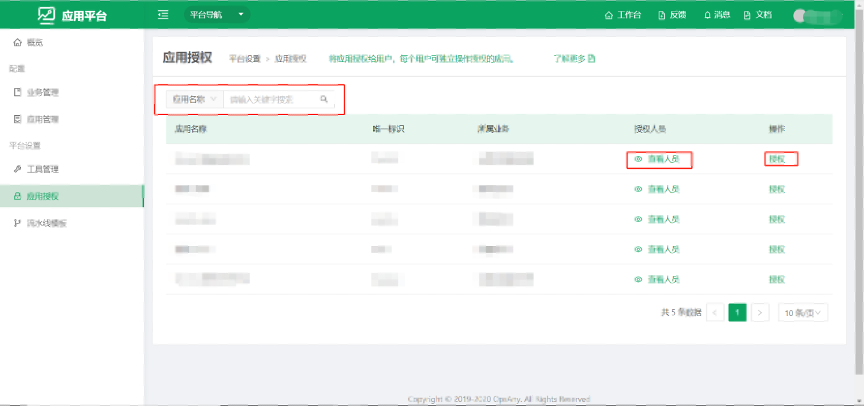
- 点击查看人员可查看到当前应用授权的人员。

- 点击授权按钮，可获取到非管理人员列表，可以选择人员进行授权操作。

流水线模板¶
流水线模板可以查看全部流水线模板，有内置的若干条分组和模板，可新建或编辑流水线分组，编辑或修改流水线模板，复制流水线模板。

- 点击新建分组可新建模板分组。

- 点击新建模板跳转至新建流水线页面，基础信息可输入模板名称，所属分组模板描述等信息，点击保存可保存当前模板。

- 点击流程配置跳转至图形化编辑界面，可按照需求进行流水线编排。

- 点击主线中加号可添加阶段。
注意： 阶段内不能为空，至少要有一条命令。

- 点击阶段内加号可选择支持的命令选项输入相关内容。

- 点击增加并行阶段，可编辑与当前阶段同时进行的流程。
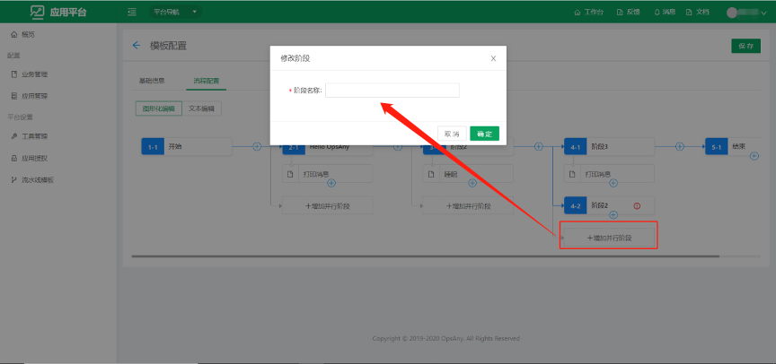
- 点击结束下方按钮可以增加执行条件选项，可根据需求选择流程执行完后的操作。
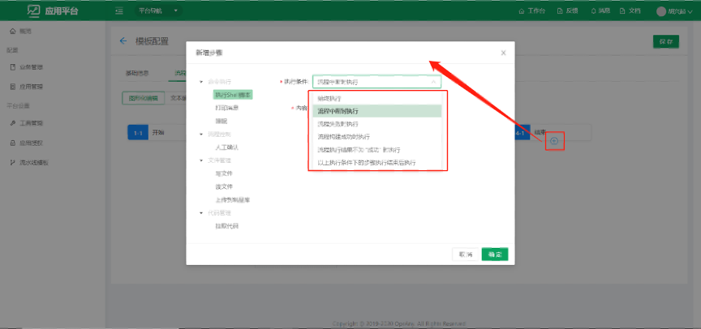
- 点击文本编辑可以查看编辑好的脚本。
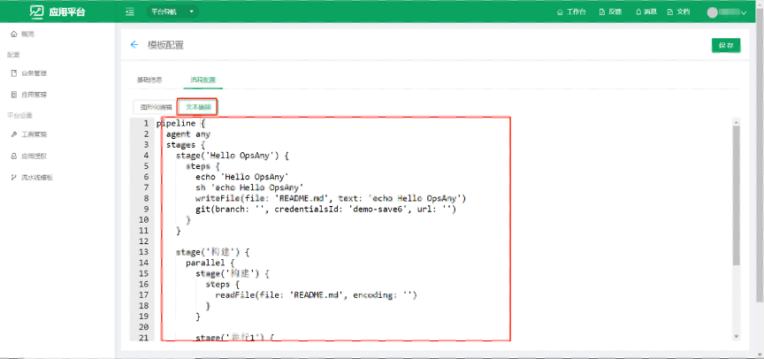
应用管理¶
在应用管理列表点击应用名称或者点击进入按钮可进入当前应用，进行应用的管理。

进入应用概览界面，显示当前应用相关的数据，当前应用位置显示最近进入的应用列表可快速切换应用，或点击选项底部查看全部应用退出当前应用。
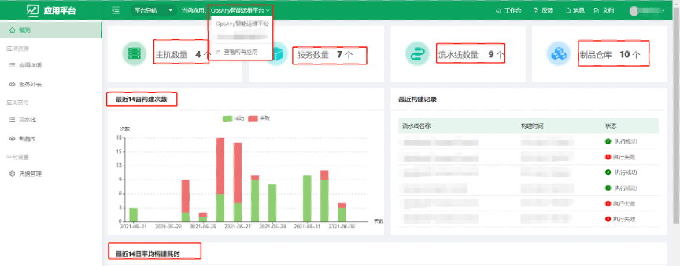
应用详情¶
- 点击应用详情可查看应用相关的字段信息，应用的字段和字段内容包括关联关系字段可在资源平台进行操作管理详见资源平台（资源平台 应用模型 应用）。

- 点击关联关系下方列表可获取应用关联的模型数据，可对数据列表进行删除，添加，搜索等操作。

- 点击添加关系可获取到未添加的关联模型数据，点击绑定即可加入关联关系列表。

服务列表¶
- 点击服务列表可查看当应用的服务列表，可进行搜索，刷新，新建，编辑，删除等操作，点击名称可进入服务详情。

- 点击新建按钮弹出新建框，会显示出资源平台配置好的字段以及字段数据类型。
注意：名称和唯一标识是必填参数，且唯一标识仅支持数字、字母、下划线，且以字母开头。

- 点击编辑按钮打开编辑框，唯一标识将不可修改，请修改其他字段。

- 点击服务名进入服务详情界面，可查看基础字段和关联字段，且可以对关联关系进行管理。

- 点击关联关系下方列表可查看，编辑，删除关联关系数据等操作，操作同业务和应用一致。

应用交付¶
流水线¶
- 点击流水线操作可对流水线进行各种操作，需要在工具管理添加Jenkins工具且状态为正常，可新建，编辑，删除，执行流水线，可查看执行历史，删除执行历史。

- 点击执行图标或点击立即执行按钮可执行当前流水线。

- 点击查看记录或运行编号可进入执行日志界面，查看流水线执行日志。

- 点击新建流水线按钮可新建流水线，弹出抽屉按照步骤操作，输入基本信息并下一步。

- 新建流水线第二步选择模板，左侧可选择模板分组，右侧是分组内的流水线（流水线模板可在应用外流水线模板栏进行管理），未点击前往配置详情时点击提交按钮新建流水线完成，流水线会使用选择的模板。 点击前往配置详情时点击提交按钮会跳转至编辑流水线界面，可对流水线进行二次编辑，包括流水线基本信息，脚本内容，触发构建，参数管理等。
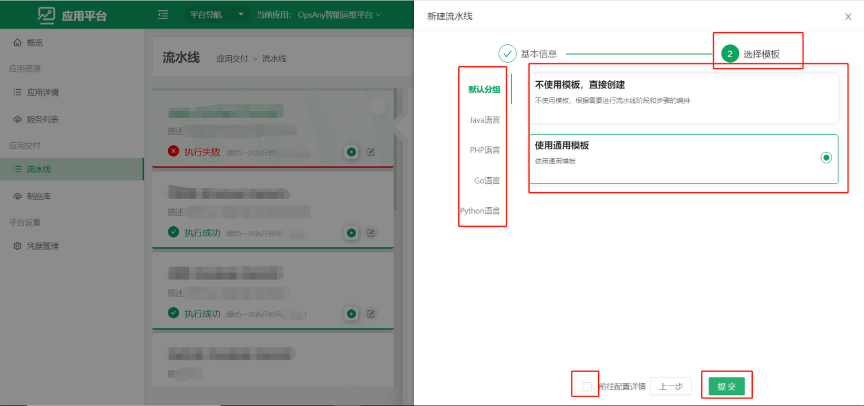
- 勾选前往配置，可以进入配置流水线界面。
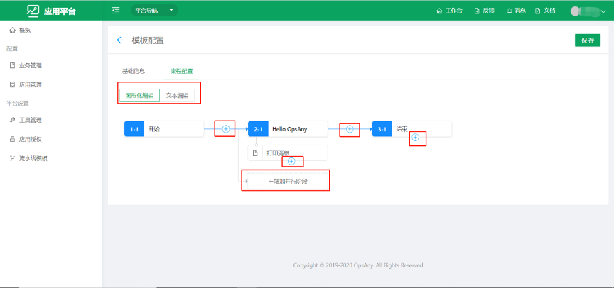
制品库¶
- 点击制品库可进入制品库操作界面，可新建制品库，删除制品库，上传制品库资源，查看制品库资源，删除制品库资源等操作。 注意：使用此功能需要在工具管理添加Nexus制品库工具，且状态为正常。

- 点击使用指引可以查看使用方法，可按照指引使用制品库上传或下载操作。

- 点击新建按钮，跳转至新建制品库界面。
目前平台支持四种制品仓库，包括Raw，Docker ，Maven，PyPi。
可选择应用内外，当选择应用外时此制品库为全局仓库，其他应用也可以查看和使用，选择应用内，仅当前应用可见。
仓库地址是工具管理配置的API地址，后半部分仅支持 字母数字下划线，不支持中文

- 点击修改图标可修改制品库信息，可修改制品库应用内外权限，可删除制品库。 注意： 请谨慎操作删除按钮，删除当前制品库会清空仓库内全部资源。
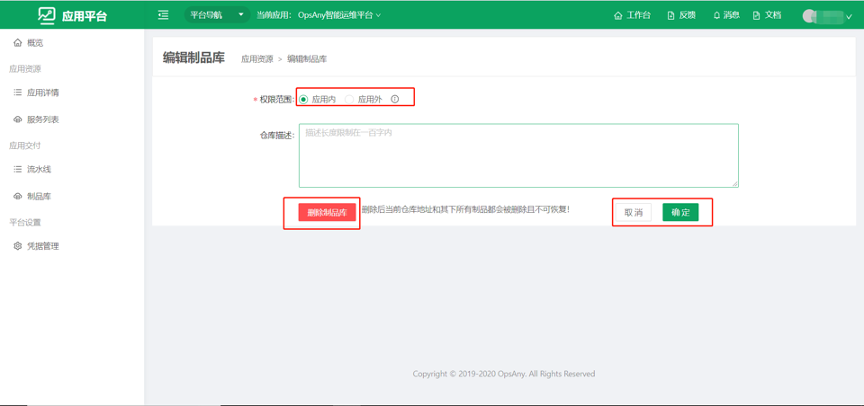
- 点击上传资源可上传资源到制品库，不同的制品库需要的字段类型不同，按照要求输入。
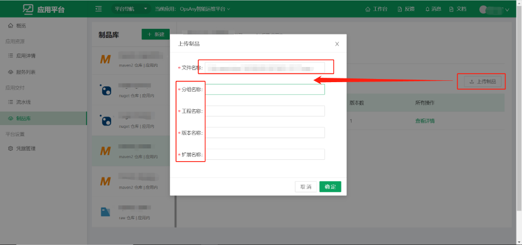
- 点击资源可查看资源详情或下载资源。

平台设置¶
凭据管理¶

- 点击新建凭据，可新建指定类型凭据。
目前支持密码验证，Gitlab令牌，秘钥校验三种凭据类型。
可见范围为当前应用或全部应用。
ID为唯一标识，不可重名且不可修改。

- 点击编辑按钮可修改凭据，ID不可修改。
要修改密码，秘钥和通行码请点击修改按钮进行修改，不修改时请点击放弃并提交。
密码，秘钥和通行码一旦输入提交后就不可查看。